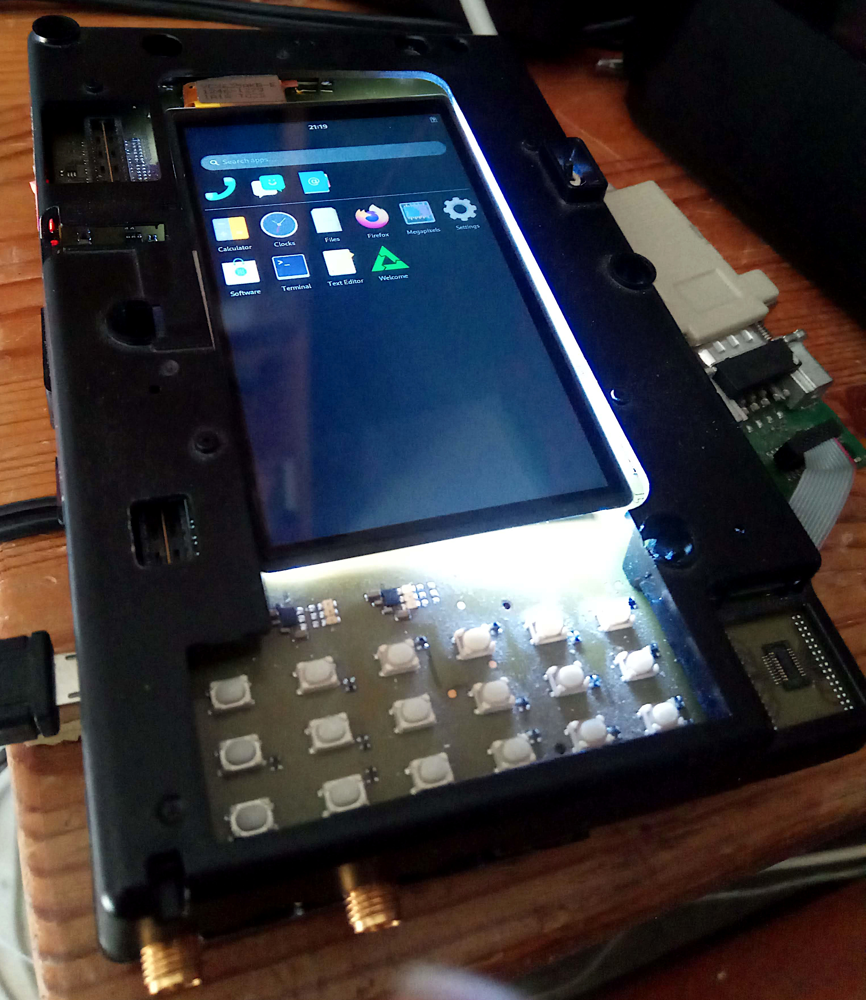

ST-Ericsson NovaThor U8500
|
 Phosh running on the ST-Ericsson U8500 HREF (Hardware Reference Design) | |
| Manufacturer | ST-Ericsson |
|---|---|
| Name | NovaThor U8500 |
| Architecture | armv7 |
| CPU | 2x 1 GHz ARM Cortex-A9 |
| GPU | ARM Mali-400 MP |
| Year | 2011 |
| Process | 40nm |
| Mainline | yes |
| Components | |
| CPU |
Works
|
| UART |
Works
|
| Storage |
Works
|
| USB |
Works
|
| Display |
Works
|
| GPU |
Works
|
| Pinctrl |
Works
|
| I²C |
Works
|
| Audio | |
| Video | |
| Thermal |
Works
|
| WiFi |
Unavailable
|
| Bluetooth |
Unavailable
|
| Modem | |
| GPS |
Unavailable
|
| Camera | |
| Suspend |
Works
|
{kind=link}
Devices with this chipset
This chipset is used similarly in the following devices:
| Device | Codename | Mainline |
|---|---|---|
| Samsung Galaxy Ace 2 GT-I8160 | samsung-codina | Y |
| Samsung Galaxy S Advance GT-I9070 | samsung-janice | Y |
| Samsung Galaxy S III mini GT-I8190 | samsung-golden | Y |
| Samsung Galaxy Xcover 2 GT-S7710 | samsung-skomer | Y |
| Sony Xperia P | sony-nypon | |
| Sony Xperia U | sony-kumquat |
Other devices using this chipset but not yet ported to postmarketOS (remove once they are ported):
- Samsung have released a number of phones on the platform:
- Samsung GT-I9060 codename Godin is mentioned in the Codina kernel drop but appears to never have been produced, instead another device has the model numer GT-I9060.
- Samsung Galaxy Beam GT-I8530 codename Gavini (wikipedia, upstream devicetree)
- Samsung Galaxy Exhibit T599 (a variant of GT-I8160/Codina according to the code dumps, "Codina T-mobile" is mentioned, upstream devicetree)
- Samsung Galaxy Amp SGH-I407 codename Kyle (upstream devicetree)
- Samsung Galaxy 070 YP-GI2 codename Hendrix seems to have been intended as a NovaThor U8500 device but ended up using a Marvell chip. This is not confirmed.
- Sources also mentions, at one point, a product called "Venus" and at another point "Ricco" but no other information exists.
- Sony refers to the U8500 platform as "RioGrande" and there is one kernel for all the Sony devices: RioGrande kernel source code
- Motorola XT760
- HTC Desire 400 dual SIM
- HTC One SU, ST & SC
- HTC Sensation Z710t
Charging
{kind=link}
The U8500 has a companion power management IC (PMIC, also known as analog baseband, AB) ASIC called AB8500/AB8505 that takes care of the charging. In difference from many other charging ICs this chip is not autonoumous and will not charge the phone without the right software to instruct it, respond to interrupts etc. So in short: the phone will not charge unless the kernel has started and provides the right driver for the charger portions of the AB8500.
The mainline kernel for the U8500 supports battery charging as of v5.18-rc1.
To work with these phones an extra battery and an external battery charger can be helpful: if your battery depletes completely before you recharge it you have a problem.
This type of charger at Wish can charge all of these batteries. It is a noname product simply named "Multi-connector USB Battery charger" that originates in China and often found in webstores such as Aliexpress or Wish. The charger comes with a US plug, so you may additionally need a US-to-european power converter to use it.
Suspend
Suspend-to-RAM works and can be tested by:
echo mem > /sys/power/state
The system will become uninteractive until woken up by some event such as touchscreen, buttons etc. (If any of these do not wake up the system each driver and config needs to be augmented such that it will.) If nothing else works the power button will generate a wake-up event.
Audio
As stated here, getting Audio work requires more work. linusw made some not yet working experiments.
Modem
The modem used in the U8500 SoC was developed by Nokia. In 2010 Nokia sold their wireless modem division to Renesas, who since has developed and supported this modem.
The vendor main source code for the modem interface can be found here. The vendor kernel also contains the driver in drivers/net/u8500_shrm.c (shared memory) and include/linux/modem/*.
The U8500 DTS has the reserved memory areas for the modem defined: private, shared and trace memory.
The U8500 then uses Phonet to talk to the modem, so the userspace stack should be similar to what the Nokia n900 is using so one can draw inspiration from there. IP will probably work out-of-the-box with Phonet but maybe some AT commands from userspace are needed too.
Audio phonecalls will require a special quirk to the audio driver once it is working (for very low latency) but should be doable as well.
Released Samsung U8500 Models
These are the known existing Samsung U8500 models in release order.
| Product name | Model | Codename | Releasedate | Notes |
|---|---|---|---|---|
| Galaxy Ace 2 | GT-I8160 | Codina | February 2012 | GT-I8160P variant with NFC exists |
| Galaxy S Advance | GT-I9070 | Janice | April 2012 | GT-I9070P variant with NFC exists |
| Galaxy Beam | GT-I8530 | Gavini | July 2012 | |
| Galaxy S III mini | GT-I8190N | Golden | November 2012 | |
| Galaxy Xcover 2 | GT-S7710 | Skomer | March 2013 | |
| Galaxy Exhibit | SGH-T599 | Codina TMO | May 2013 | Made exclusively for T-Mobile |
| Galaxy Amp | SGH-I407 | Kyle | June 2013 | Made exclusively for AT&T Aio Wireless |
Upstream code trees
The GPL code drops for various U8500 devices can be found on the branches in this git tree:
https://github.com/linusw/u8500/branches
USB-to-serial Cable for Samsung NovaThor U8500 devices
The Samsung U8500 models use a modified microUSB cable for serial debugging. As per the cable schematics page the Micro-USB Interface Controller the required resistance used on all Samsung U8500 models is 619KΩ to GND.
Flash and SDcard Layout on Samsung NovaThor U8500 Devices
When working with these devices, we install U-Boot, the kernel (zImage) and a small initial ramdisk (initrd) in the internal flash of the phone. The installation is done in three steps:
- U-Boot is installed on the Samsung U8500 devices using the Samsung open source flashing tool Heimdall. This is the open source reimplementation of Samsungs Odin tool. This has to be done manually before you can use
pmbootstrap. - The kernel and inital ramdisk is then installed using U-Boot. After installing U-Boot, any time we want to reflash the phone internal eMMC kernel image and initial ramdisk, we do this using U-Boot's fastboot implementation, and on the host side we use the Android fastboot command-line tool to do the reflashing of new kernels.
pmbootstrap flashwill hide these details, but it's good to know. - The root filesystem for PostmarketOS will be stored on the external SDcard, so you will need to set up an SDcard using
pmbootstrap install --sdcard=/dev/nnnn.
U-Boot on Samsung NovaThor U8500 Devices
There is a port of (mainline) U-Boot for U8500 currently maintained at: https://github.com/stericsson-mainline/u-boot
It contains a board called stemmy, which is intended for all Samsung devices using U8500 (see above). It provides a simple Android fastboot interface as replacement for Samsung's proprietary flashing procedure. As a device tree compatible bootloader, it can be also used to boot mainline without any hacks in the Linux kernel.
| Note: In this case, U-Boot does not replace the Samsung bootloader. Instead, it is packaged into an Android boot image (if necessary), and flashed to the Android boot partition replacing the Linux kernel. The kernel will be loaded from an offset into the boot partition. |
Installation
Heimdall can be found here but is packaged into most major Linux distributions such as Debian, Ubuntu and Fedora.
Pre-built U-boot images are available from: https://github.com/novathor-mainline/u-boot/releases. Alternatively, you can build it from source. See #Building below.
Choose the Android boot image (u-boot.img) or the raw binary (u-boot.bin), depending on your device. Most newer devices (e.g. samsung-golden and samsung-skomer) use the Android boot image format, but some older (e.g. samsung-janice) use the raw binary.
| Product name | Model | Codename | U-Boot | Notes |
|---|---|---|---|---|
| Galaxy Ace 2 | GT-I8160 | Codina | u-boot.bin |
|
| Galaxy S Advance | GT-I9070 | Janice | u-boot.bin |
|
| Galaxy Beam | GT-I8530 | Gavini | u-boot.bin |
|
| Galaxy S III mini | GT-I8190N | Golden | u-boot.img |
|
| Galaxy Xcover 2 | GT-S7710 | Skomer | u-boot.img |
|
| Galaxy Exhibit | SGH-T599 | Codina TMO | u-boot.bin |
|
| Galaxy Amp | SGH-I407 | Kyle | u-boot.img |
To get into "custom OS install" hold volume down and home key down and press power on. The phone will vibrate and issue a warning ("A custom OS can cause critical problems...") if you are OK with this risk, press volume up to continue. When the phone shows the Android robot and says Downloading... you can use Heimdall to download U-Boot.
Install it normally to the boot partition replacing the default Kernel (notice capital K on Kernel):
heimdall flash --Kernel u-boot.[bin|img]
If this doesn't work, especially if you have messages in the console such as "Android recovery image size=322449, ramdisk size=0" then the phone is not booting from the Kernel partition but from Kernel2 so try this instead:
heimdall flash --Kernel2 u-boot.[bin|img]
Usage
U-Boot will try to boot an Android boot image from the boot partition by default. Pressing one of the volume keys during boot allows to change that behavior:
-
Volume Down: Enter Fastboot mode -
Volume Up: Boot into recovery (recoverypartition)
Note: Since the boot partition is already used for U-Boot itself, U-Boot reads the Android boot image with 1 MB offset from the boot partition. This offset is applied automatically when using fastboot flash boot boot.img. |
In Fastboot mode, kernels can be directly booted from RAM using fastboot boot .... Alternatively, partitions can be flashed using fastboot flash <partition> ....
U-Boot itself can be also flashed from U-Boot using fastboot flash u-boot u-boot.img (in this case, it will not apply the offset for the boot partition).
Building
Requirements: ARM cross compiler (e.g. arm-none-eabi-gcc)
export CROSS_COMPILE=arm-none-eabi- make stemmy_defconfig make
If your device uses Android boot images, package it into an Android boot image:
mkbootimg --kernel u-boot.bin --base=0x00000000 --kernel_offset=0x00100000 --ramdisk_offset=0x02000000 --tags_offset=0x00000100 --output=u-boot.img
Kernel Hacking on NovaThor U8500
These sections detail some tricks needed when working on kernel development.
Some details can be found at the external page for [Ux500 mainline work].
Assembling a Custom boot.img
When used with PostmarketOS the boot.img that you flash into the phone should come out of the pmbootstrap utility, but if you for some reason want to assemble the boot.img using some prefabricated kernel, ramdisk and device tree, the process is like this this:
mkbootimg --kernel zImage --ramdisk initrd --second foo.dtb --base=0x00000000 --kernel_offset=0x00008000 --ramdisk_offset=0x02000000 --second_offset=0x00f00000 --tags_offset=0x00000100 --output=boot.img
Or using abootimg:
abootimg --create boot.img -k zImage -r initrd -s foo.dtb -c "pagesize=0x800" -c "kerneladdr=0x8000" -c "ramdiskaddr=0x02000000" -c "secondaddr=0x00f00000" -c "tagsaddr=0x100"
Notice how this puts the device tree binary foo.dtb into the "second bootloader firmware".
If you are booting PostmarkeOS with a custom kernel, the initrd you pass must better be a PostmarkeOS initramfs. This can be found in a path like .local/var/pmbootstrap/chroot_native/mnt/rootfs_samsung-skomer/boot/initramfs-postmarketos-stericsson. The initrd is used to set up, detect and load the rest of the rootfs from the SDcard volume so it is pretty vital.
Flashing a Custom Kernel
You install a custom kernel into the device by booting into U-Boot as described above, go to fastboot mode by holding down Power + Volume Down or by holding Volume Down while you insert the serial cable. Then you can flash a new kernel image like this:
fastboot flash boot boot.img
After this reboot the phone and your new kernel should start.
See also
- This chipset has a [wikipedia page]